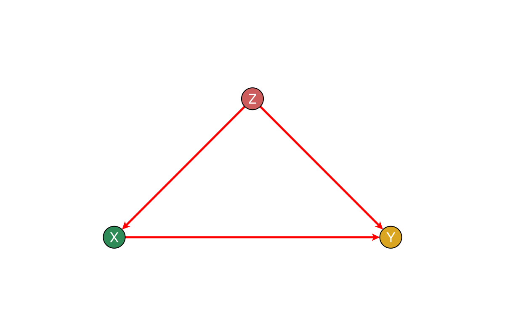
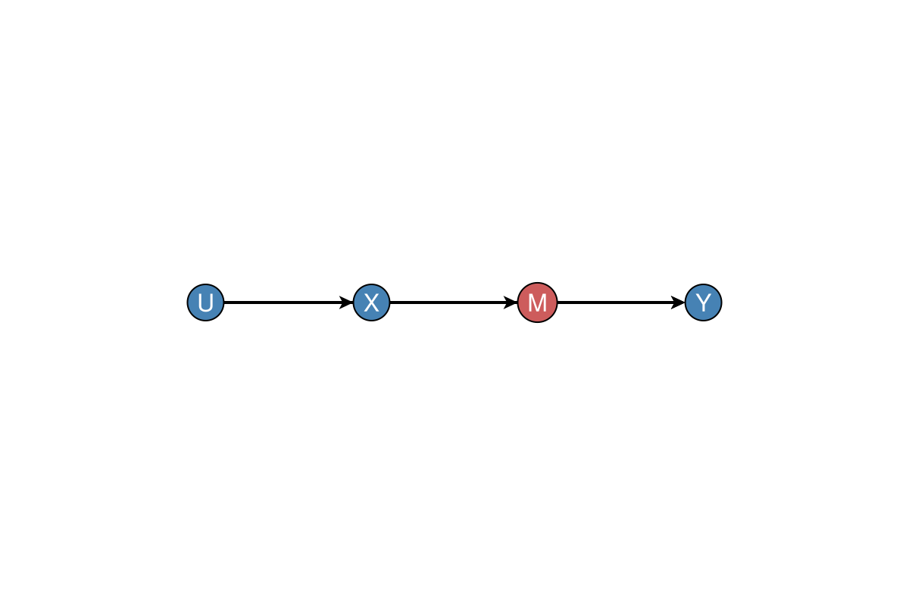

Examples
Basic Graph Operations
d-Separation
using CausalDynamics, Graphs, DAGMakie, CairoMakie
# Create a graph: Z → X → Y, Z → Y
g = DiGraph(3)
add_edge!(g, 1, 2) # Z → X
add_edge!(g, 1, 3) # Z → Y
add_edge!(g, 2, 3) # X → Y
# X and Y are d-separated by Z
d_separated(g, 2, 3, [1]) # truefalseAncestors and Descendants
# Get ancestors of a node
ancestors = get_ancestors(g, 3) # {1, 2}
# Get descendants of a node
descendants = get_descendants(g, 1) # {2, 3}Set{Int64} with 2 elements:
2
3Identification
Backdoor Criterion
# Find backdoor adjustment set
adj_set = backdoor_adjustment_set(g, 2, 3) # Set([1])
# Check if backdoor adjustment is possible
is_backdoor_adjustable(g, 2, 3) # true
fig = plot_backdoor_paths(g, 2, 3; node_labels = ["Z", "X", "Y"])
fig
Frontdoor Criterion
using CausalDynamics, Graphs, DAGMakie, CairoMakie
# Frontdoor example: U → X → M → Y, U → Y
g_frontdoor = DiGraph(4)
add_edge!(g_frontdoor, 1, 2) # U → X
add_edge!(g_frontdoor, 1, 4) # U → Y
add_edge!(g_frontdoor, 2, 3) # X → M
add_edge!(g_frontdoor, 3, 4) # M → Y
# Find frontdoor mediator sets (each set is a valid Z)
mediator_sets = find_frontdoor_mediators(g_frontdoor, 2, 4) # [Set([3])]
mediator_nodes = reduce(union, mediator_sets; init = Set{Int}())
fig = plot_causal_graph(
g_frontdoor;
node_labels = ["U", "X", "M", "Y"],
highlight_nodes = mediator_nodes,
)
fig
SCM Framework
GraphSCM
using CausalDynamics, Graphs
# Create a GraphSCM
g = DiGraph(2)
add_edge!(g, 1, 2)
equations = Dict(
1 => (u) -> u,
2 => (x, u) -> x + u
)
exogenous = Set([1])
scm = GraphSCM(g, equations, exogenous)GraphSCM(SimpleDiGraph{Int64}(1, [[2], Int64[]], [Int64[], [1]]), Dict{Int64, Function}(2 => Main.var"Main".var"#5#6"(), 1 => Main.var"Main".var"#3#4"()), Set([1]))Discrete-time CDM
using CausalDynamics, Random
cdm = DiscreteTimeCDM(
[:a, :y];
initialise = (rng) -> (a = 0.0, y = 0.0),
sample_noise = (rng, state, t) -> (u_a = randn(rng), u_y = randn(rng)),
step = (state, t, noise, intervention) -> begin
a = intervention_value(intervention, :a, t, 0.5 * state.a + noise.u_a)
y = 2a + noise.u_y
(a = a, y = y)
end,
)
T = 30
factual = simulate(cdm, T; rng = Random.Xoshiro(1))
cf = counterfactual(cdm, factual.noise; intervention = do_sequence(:a, fill(1.0, T)))
(factual.T, length(factual.series[:y]), length(cf.series[:y]))(30, 30, 30)The CDCS book Chapter 28 works the confounded protein / treatment example with this API.
For more examples, see the package's examples/ directory. For DAG layout and theming beyond these façades, see DAGMakie.jl.